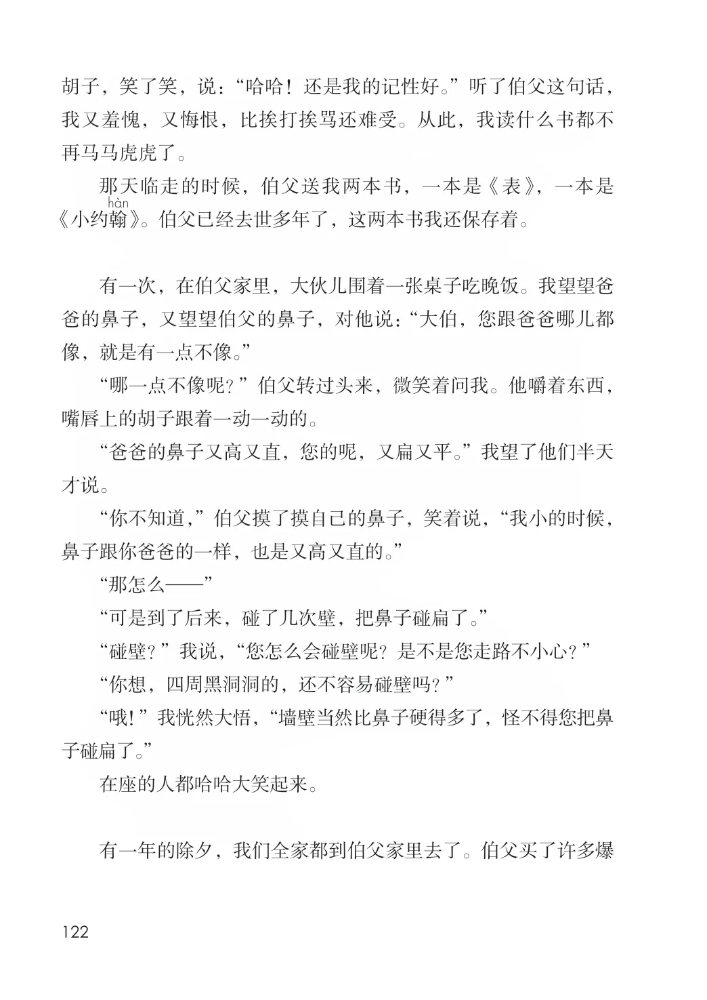
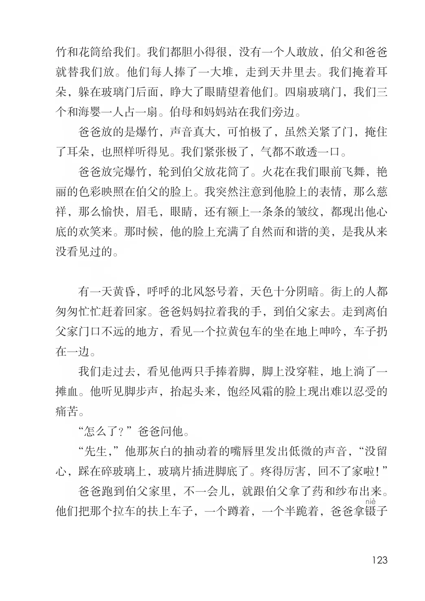
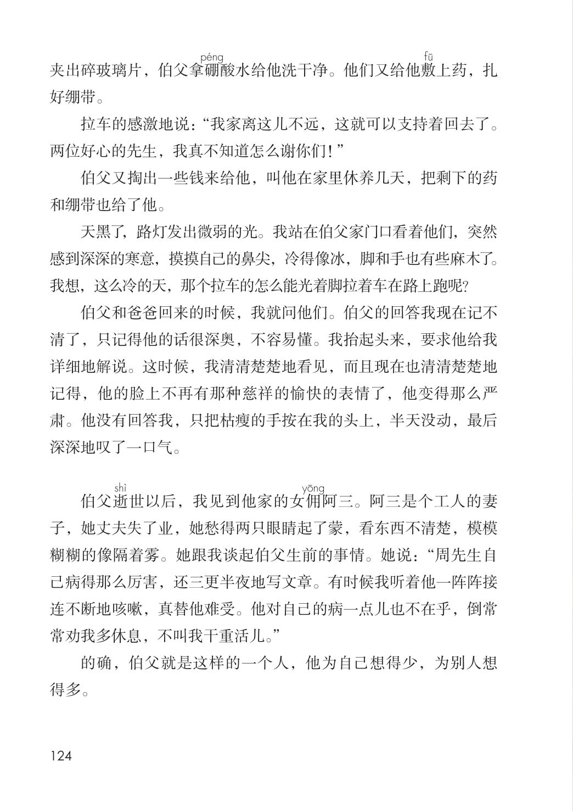

第八单元 · 第 27 课
我的伯父鲁迅先生
课后练习
- 用较快的速度默读课文，想想课文写了关于鲁迅的哪几件事，给每件事加个小标题。再结合资料和同学交流：课文中的鲁迅给你留下了怎样的印象？伯父鲁迅先生在世的时候，我年纪还小，根本不知道鲁迅是谁，以为伯父就是伯父，跟任何人的伯父一样。伯父去世了，他的遗体躺在万国殡仪馆的礼堂里，许多人都来追悼他，向他致敬，有的甚至失声痛哭。数不清的挽联挂满了墙壁，大大小小的花圈堆满了整间屋子。送挽联送花圈的有工人，有学生，各色各样的人都有。那时候我有点儿惊异了，为什么伯父得到这么多人的爱戴？我呆呆地望着来来往往吊唁的人，想到我永远见不到伯父的面了，听不到他的声音了，也得不到他的爱抚了，泪珠就一滴一滴地掉下来。就在伯父去世那一年的正月里，一个星期六的下午，爸爸妈妈带我到伯父家里去。那时候每到周末，我们姐妹三个轮流跟随着爸爸妈妈到伯父家去团聚。这一天在晚餐桌上，伯父跟我谈起《水浒传》里的故事和人物。不知道伯父怎么会知道我读了《水浒传》，大概是爸爸告诉他的吧。老实说，我读《水浒传》不过囫囵吞枣地看一遍，只注意紧张动人的情节；那些好汉的个性，那些复杂的内容，全搞不清楚，有时候还把这个人做的事情安在那个人身上。伯父问我的时候，我就张冠李戴地乱说一气。伯父摸着
文字内容 PDF 第 127 页
胡子，笑了笑，说：“哈哈！还是我的记性好。”听了伯父这句话，我又羞愧，又悔恨，比挨打挨骂还难受。从此，我读什么书都不再马马虎虎了。
那天临走的时候，伯父送我两本书，一本是《表》，一本是《小约翰》。伯父已经去世多年了，这两本书我还保存着。
有一次，在伯父家里，大伙儿围着一张桌子吃晚饭。我望望爸爸的鼻子，又望望伯父的鼻子，对他说：“大伯，您跟爸爸哪儿都像，就是有一点不像。”
“哪一点不像呢？”伯父转过头来，微笑着问我。他嚼着东西，嘴唇上的胡子跟着一动一动的。
“爸爸的鼻子又高又直，您的呢，又扁又平。”我望了他们半天才说。
“你不知道，”伯父摸了摸自己的鼻子，笑着说，“我小的时候，鼻子跟你爸爸的一样，也是又高又直的。”
“那怎么—”
“可是到了后来，碰了几次壁，把鼻子碰扁了。”
“碰壁？”我说，“您怎么会碰壁呢？是不是您走路不小心？”
“你想，四周黑洞洞的，还不容易碰壁吗？”
“哦！”我恍然大悟，“墙壁当然比鼻子硬得多了，怪不得您把鼻子碰扁了。”
在座的人都哈哈大笑起来。
有一年的除夕，我们全家都到伯父家里去了。伯父买了许多爆
文字内容 PDF 第 128 页
竹和花筒给我们。我们都胆小得很，没有一个人敢放，伯父和爸爸就替我们放。他们每人捧了一大堆，走到天井里去。我们掩着耳朵，躲在玻璃门后面，睁大了眼睛望着他们。四扇玻璃门，我们三个和海婴一人占一扇。伯母和妈妈站在我们旁边。
爸爸放的是爆竹，声音真大，可怕极了，虽然关紧了门，掩住了耳朵，也照样听得见。我们紧张极了，气都不敢透一口。
爸爸放完爆竹，轮到伯父放花筒了。火花在我们眼前飞舞，艳丽的色彩映照在伯父的脸上。我突然注意到他脸上的表情，那么慈祥，那么愉快，眉毛，眼睛，还有额上一条条的皱纹，都现出他心底的欢笑来。那时候，他的脸上充满了自然而和谐的美，是我从来没看见过的。
有一天黄昏，呼呼的北风怒号着，天色十分阴暗。街上的人都匆匆忙忙赶着回家。爸爸妈妈拉着我的手，到伯父家去。走到离伯父家门口不远的地方，看见一个拉黄包车的坐在地上呻吟，车子扔在一边。
我们走过去，看见他两只手捧着脚，脚上没穿鞋，地上淌了一摊血。他听见脚步声，抬起头来，饱经风霜的脸上现出难以忍受的痛苦。
“怎么了？”爸爸问他。
“先生，”他那灰白的抽动着的嘴唇里发出低微的声音，“没留心，踩在碎玻璃上，玻璃片插进脚底了。疼得厉害，回不了家啦！”
爸爸跑到伯父家里，不一会儿，就跟伯父拿了药和纱布出来。他们把那个拉车的扶上车子，一个蹲着，一个半跪着，爸爸拿镊子
文字内容 PDF 第 129 页
夹出碎玻璃片，伯父拿硼酸水给他洗干净。他们又给他敷上药，扎好绷带。
拉车的感激地说：“我家离这儿不远，这就可以支持着回去了。两位好心的先生，我真不知道怎么谢你们！”
伯父又掏出一些钱来给他，叫他在家里休养几天，把剩下的药和绷带也给了他。
天黑了，路灯发出微弱的光。我站在伯父家门口看着他们，突然感到深深的寒意，摸摸自己的鼻尖，冷得像冰，脚和手也有些麻木了。我想，这么冷的天，那个拉车的怎么能光着脚拉着车在路上跑呢？
课后练习
- 伯父和爸爸回来的时候，我就问他们。伯父的回答我现在记不清了，只记得他的话很深奥，不容易懂。我抬起头来，要求他给我详细地解说。这时候，我清清楚楚地看见，而且现在也清清楚楚地记得，他的脸上不再有那种慈祥的愉快的表情了，他变得那么严
- 肃。他没有回答我，只把枯瘦的手按在我的头上，半天没动，最后深深地叹了一口气。伯父逝世以后，我见到他家的女佣阿三。阿三是个工人的妻子，她丈夫失了业，她愁得两只眼睛起了蒙，看东西不清楚，模模糊糊的像隔着雾。她跟我谈起伯父生前的事情。她说：“周先生自己病得那么厉害，还三更半夜地写文章。有时候我听着他一阵阵接连不断地咳嗽，真替他难受。他对自己的病一点儿也不在乎，倒常常劝我多休息，不叫我干重活儿。”的确，伯父就是这样的一个人，他为自己想得少，为别人想得多。
原版对照
原书页面与全部插图
点击图片可查看大图。



